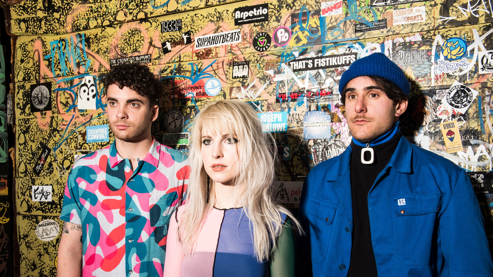
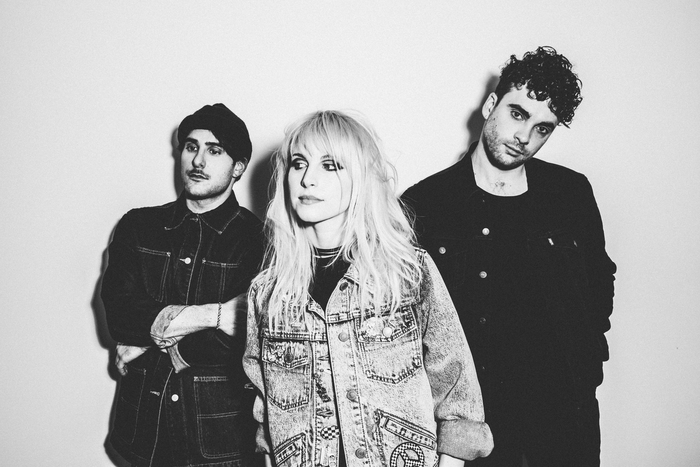
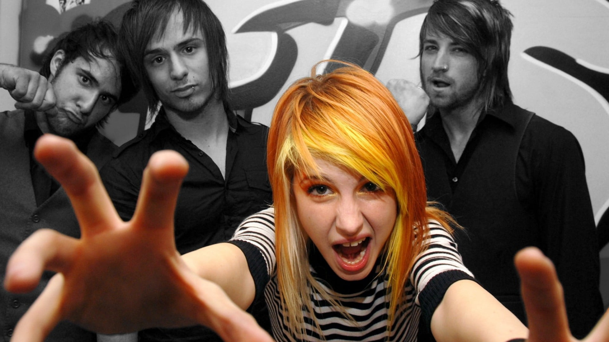
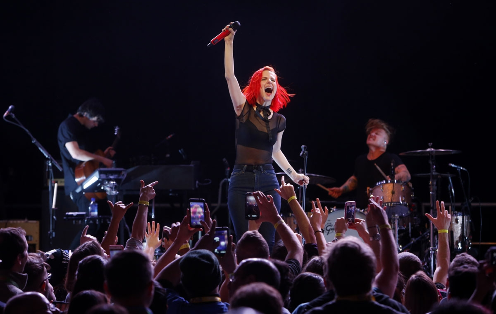
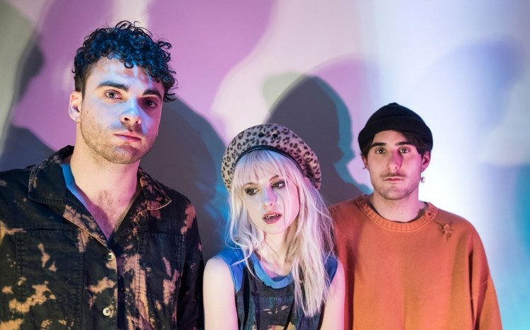
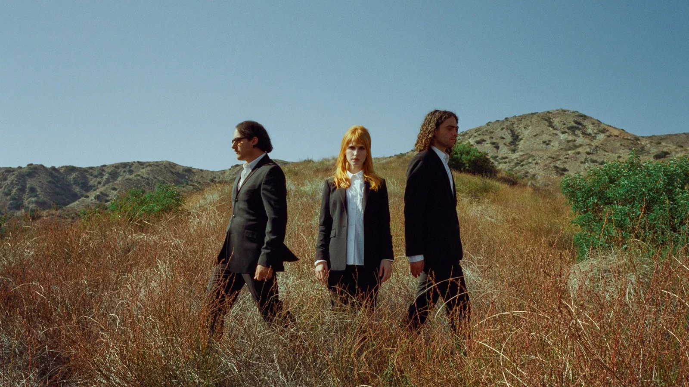

Bibliografia
Paramore es una banda estadounidense de rock alternativo formada en Franklin, Tennessee, en 2004. La banda fue fundada por la vocalista Hayley Williams, el guitarrista Taylor York y el baterista Zac Farro. Con una mezcla enérgica de punk, pop y emo, Paramore rápidamente llamó la atención en la escena musical local de Nashville antes de firmar con una importante discográfica.
El álbum debut homónimo de Paramore fue lanzado en 2005, seguido de "Riot!" en 2007, que incluía éxitos como "Misery Business" y "Crushcrushcrush", consolidando su estatus como una de las bandas más emocionantes del momento. En 2009, lanzaron "Brand New Eyes", que presentaba sencillos como "Ignorance" y "The Only Exception", recibiendo elogios de la crítica y ampliando su base de fans.
Sin embargo, fue con su cuarto álbum de estudio, "Paramore", lanzado en 2013, que la banda alcanzó un nuevo nivel de éxito comercial y crítico. El álbum incluía sencillos como "Still Into You" y "Ain't It Fun", que les valieron premios Grammy y un lugar en la cima de las listas de éxitos. A lo largo de los años, Paramore ha evolucionado musicalmente y ha experimentado con diferentes estilos, manteniendo su relevancia en la escena musical actual con álbumes como "After Laughter" (2017). A pesar de algunos cambios en la formación, con la salida y regreso de miembros como Zac Farro, Paramore sigue siendo una fuerza creativa en la música alternativa, emocionando a sus seguidores con su música sincera y sus electrizantes actuaciones en vivo.





